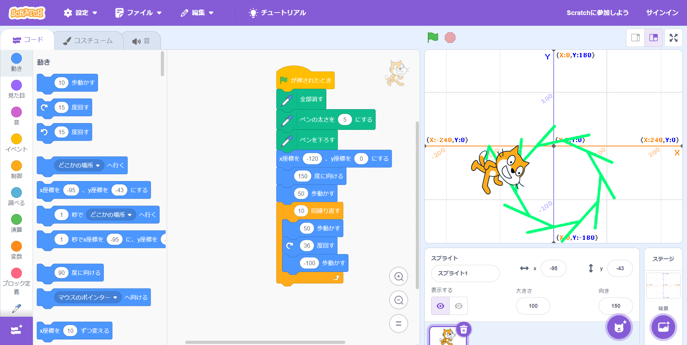

1-1 サイエンスアート

1.内容
スクラッチを使って線を書くプログラムを作成した．
緑旗を押されたとき，ペンの設定を行って猫のスプライトを
座標上の(x,y)=(-120,0)に移動させる．その後，150°傾けて，
スプライトの向きに50だけ移動する．そして，スプライトの向きに50だけ移動，
30°回転，スプライトの向きに-100だけ移動するのを10回繰り返した．
その結果が座標上に現れた．
2.感想
思い描いていた図形がなかったので，演習時のブロックに任意の値を入れたが，
面白みのある図形を描くために，色を変えたり動きを追加しておけば良かったと思った．
自分の作りたい図形を思い描いてから作ろうと感じた．